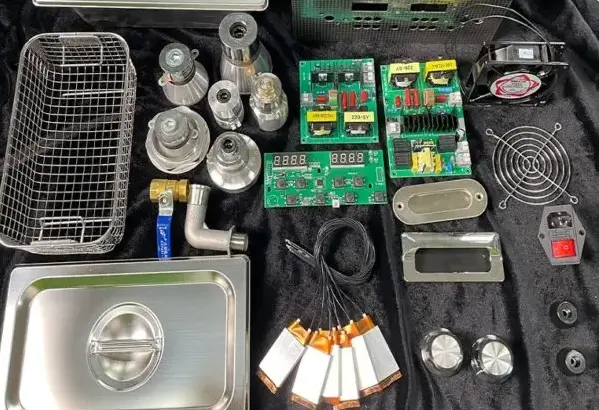

În fizică, sunetul este o vibrație care se propagă de obicei ca o undă de presiune audibilă, printr-un mediu de transmisie, cum ar fi un gaz, lichid sau solid.
La oameni, auzul are loc când vibrațiile de frecvențe între 15 și 20.000 de hertzi ajung la urechea internă.
Hertzul (Hz) este unitatea de măsură a frecvenței egală cu o perioadă pe secundă. Astfel, vibrațiile ajung la urechea internă când sunt transmise prin aer.
Sunt vibrații mecanice cu frecvențe înalte (peste 20.000 Hz) imperceptibile auzului uman, utilizate pe scară largă în medicină atât pentru imagistică (ecografie), cât și în fizioterapie.
Ultrasunetele au lungime de undă mică comparativ cu infrasunetele. Acestea sunt direcționale și precise.
Fenomene geologice: cutremure, erupții vulcanice
Fenomene meteorologice: furtuni, fulgere, tornade, vânturi puternice
Fenomene acvatice: valurile oceanelor, cascade
Surse biologice: comunicațiile balenelor, elefanților, etc.
Industrie și tehnologie: Turbine eoliene, motoare diesel, compresoare, instalații de ventilație industrială
Transporturi: trafic rutier intens, avioane, trenuri
Explozii: explozii subterane, activități miniere, detonări militare
Expunerea la infrasunete, mai ales la intensități mari, poate provoca disconfort fizic și psihologic...
Datorită propagării pe distanțe mari, infrasunetele sunt folosite pentru:
Ultrasunetele de înaltă frecvență creează milioane de bule microscopice în lichid care, la contactul cu un obiect, implodează și elimină murdăria fără contact mecanic.
Traductorul piezoelectric transformă energia electrică în vibrații mecanice (peste 20.000 Hz). Acestea produc zone de presiune ridicată și scăzută. În zonele de presiune scăzută, apa "se rupe" creând mici viduri (bule), care la implozie eliberează energie la nivel microscopic.

Procesul de construcție pas cu pas:
EXPERIMENTUL PE YOUTUBE ↗